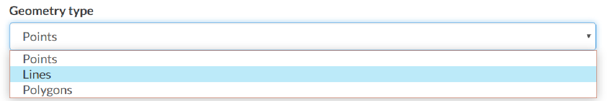

Creating a Layer from scratch¶
An interesting tool that GAIR makes available to you is the Create Layer. It allows you to create a new vector layer from scratch. The Layer Creation Form is reachable through the Create Layer link from the Data dropdown menu of the navigation bar (at the top of the page), shown in the picture below.
Create layer link
In order to create the new Layer you have to fill out the required fields:
Name
Title
Geometry type
Geometry types
Usually the layers features should have some Attributes that enrich the amount of information associated with each of them. Through the Add Attribute button you can add new attributes.
New Layer creation from scratch
At this time you can also change the default Permissions settings, see Changing the Layer Permissions to learn how.
Once the form has been filled out, click on Create. You will be redirected to the Layer Page (see Layer Information). Now your Layer is created but is still empty, no features have been added yet. See the Layer Editing section to learn how to add new features.